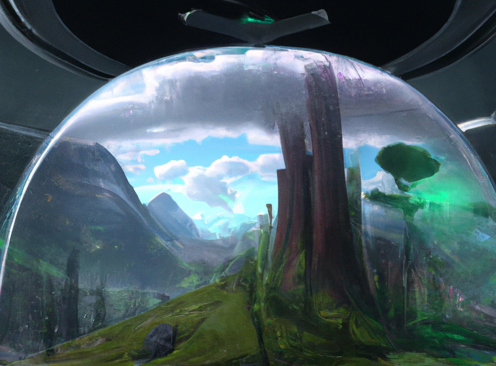

La dépression joyeuse
“Ce qui est compliqué avec l'engagement écologique et social, c'est que nous avons affaire à des gens extrêmement radicalisés.
Je parle des chantres de la finance et de tous ceux qui préfèrent leur argent à leur enfant.
Je parle de ceux, nombreux, puissants, relayés qui parviennent à nous faire croire que défendre la vie est une position extrémiste.
Ce sont nos ennemis.”
Alors, suis-je un ennemi d’Aurélien Barrau ?
Utilisons un petit baromètre de ma conception pour le déterminer.
Pour chaque critère énoncé, je vais me positionner sur une échelle de un à trois, correspondant aux appréciations suivantes : 1. ne correspond pas, 2. correspond partiellement, 3. correspond entièrement.
Nous ferons la moyenne de tout cela, et jugerons sur pièce.
Premier critère : suis-je extrêmement radicalisé ?
Bon, on commence avec un pas facile.
J’ai bien envie de répondre non, mais on m’a déjà fait remarquer que j’étais borné et con.
Coupons la poire en deux. Disons 2. correspond partiellement.
Deuxième critère : suis-je un chantre de la finance ? Celui-là m’embête un peu également.
Je ne travaille pas dans la finance, cela pourrait me sauver. Cependant, j’ai tendance à penser qu’elle a un rôle utile et j’ai même acheté des parts d’un ETF géré par Blackrock.
Il faut se rendre à l’évidence. Je suis contraint de dire 3. correspond entièrement.
Troisième critère : est-ce que je préfère mon argent à mon enfant ?
N’ayant pas d’enfant, je suis forcé de répondre 3. correspond entièrement.
Quatrième critère : suis-je nombreux ? Ah, ben là non. Je suis un. Je réponds donc 1. ne correspond pas.
Cinquième critère : suis-je puissant ? Il jette un œil rapide sur ses biceps. 1. ne correspond pas.
Sixième critère : suis-je relayé ? Il consulte les statistiques de son blog. 1. ne correspond pas.
Les trois derniers m’ont un peu sauvé, mais je partais mal. Avec une moyenne de 1,8, je suis à tout le moins antipathique aux yeux de monsieur Barrau.
Blague à part, je ne sais pas si je corresponds tant que ça à la cible privilégiée d’Aurélien Barrau. Je fais la totalité de mes déplacements quotidiens à pied ou en métro, je me restreins sur les trajets effectués en avion, j’essaye de réduire mon utilisation des écrans, ma consommation de viande et ma production de déchets non recyclables, je fais pipi sous la douche, bref : j’essaye d’être un petit bobo tout comme les écolos ils aiment. En vrai, c’est dur. Je tape pas mal dans le poulet et je suis même allé à Disney World une fois. Mais c’est promis, je vais me confesser sous l’arbre mojo après. Bon ok, je me confesse tout seul chez moi. Bon ok, je ne me confesse pas, mais je culpabilise, ça ouais.
Soyons clair : son némésis, c’est Elon Musk. Même dans l’hypothèse où je signais tout ce qui sort de la bouche du milliardaire, comme nous l’avons vu, je ne suis pas puissant, je ne suis pas relayé, et je suis un. Alors au fond, on s’en fout.
Pourquoi cet article alors ? Parce qu’il y a quelques jours, je suis tombé là-dessus.
Une prise de parole d’Aurélien Barrau, un des principaux représentants de la décroissance économique, au parlement Européen dans le cadre de la conférence Beyond Growth, Au-delà de la croissance. Et il fallait que j’en parle.
“Notre problème ne concerne pas principalement l’utilisation des énergies fossiles. [...] Il existe des limites planétaires, nous les dépassons, c’est intenable.”
Je préfère saisir cette opportunité pour exprimer mon accord avec Aurélien Barrau. Je ne sais pas si cela me servira de garantie pour ce que je dirai après, mais je veux insister sur ceci : je ne cherche pas à nier le diagnostic consensuel des experts, pas plus que ce que l’on peut directement observer. Les années se réchauffent, les catastrophes naturelles se multiplient, les glaciers fondent, les sols s’assèchent, le plastique s’accumule dans les océans. Je partage donc les inquiétudes à ce sujet.
Sur la forme, on pourrait espérer plus persuasif, moins culpabilisant afin d’encourager la concorde plutôt que d’activer des réflexes défensifs. Mais après tout, Aurélien Barrau est un militant qui souffre du syndrome du militant.
Peu importe, c’est après que les choses se gâtent, et que le discours prend un virage idéologique. À noter que ce virage est parfaitement assumé.
“Je crois pourtant que ce serait encore manquer de profondeur d’en demeurer ici. Permettez-moi donc d’énoncer les choses d'une manière un peu plus provocatrice.”
À ce stade, Aurélien Barrau aborde la question du progrès et développe un véritable plaidoyer contre celui-ci et les formes qu’il prend. En bon orateur de la fin du premier quart du 21ème siècle, il s’attaque de front au sujet bouillant de l’actualité.
“[Il est] déraisonnable d’user du terme d’intelligence artificielle très à la mode pour référer à des algorithmes qui n’ont rien d’intelligent. [...] Souhaite-on obérer le fondement de notre humanité en déléguant nos choix à des processeurs ?”
Voilà un bel exemple de caricature qui n’est - il me semble - pas à la hauteur des discussions. C’est efficace, cela fait son effet, et en écoutant Aurélien dérouler son alarmant mille-feuilles, j’étais à deux doigts de me lever et d’aller incendier les centres de données d’Open AI.
“Cette technologie qui permettra d’automatiser les recrutements, de marginaliser les artistes, d’uniformiser les attentes, d'atrophier les possibles, de déployer les contrôles et surveillances de masse, d’élaguer les errances, d’autonomiser la finance, et de supprimer les imprévus, est-elle un progrès ?”
À l’aube de ce qui sera peut-être une nouvelle ère technologique, il se pourrait bien que l’attitude la plus sage consiste à nous retenir de conclure trop tôt. Nous avons à peine commencé à gratter la surface. Pourtant, à mesure que les cerveaux se saisissent du potentiel technologique, nombre d’initiatives innovantes et enthousiasmantes se font déjà jour dans des domaines d’application allant de l’aménagement du territoire à l’aide humanitaire, en passant par la transition énergétique, l’agriculture, la santé, l’éducation, la robotique industrielle et j’en passe.
Il ne s’agit pas de considérer que toute innovation est vertueuse par nature. Mais comme depuis l’aube des Hommes, les technologies ne sont pas des personnes, elles sont ce que nous en faisons. Il s’agit de faire preuve de mesure, d’éthique et de vision.
Car si cette technologie est employée afin de faciliter notre accès à l’emploi, de repousser les frontières de l’art, de réduire les inégalités de chance, d’augmenter le champ des possibles, de rendre nos routes et nos villes plus sûres, d’élaguer les tâches répétitives, de démocratiser l’investissement, et de mieux prévenir les risques, elle constituera sans aucun doute possible un progrès.
Malheureusement il semble que nous écoutions avec un peu trop d’enthousiasme des discours nourris à la méfiance. Quand je vois une assemblée au parlement Européen applaudir en cœur de tels propos d’Aurélien Barrau, cela vient me chercher au ventre. J’ai peur pour cette vieille Europe dont je suis issu. Cette vieille Europe des lumières qui semble avoir perdu le goût de l’innovation, trop occupée à réglementer. Cette vieille Europe qui, comme Aurélien Barrau, carbure à la peur alors qu’elle devrait carburer au goût de solutions pour améliorer le quotidien des futurs humains. Il serait temps que cette Europe vieillissante sorte de ses hémicycles poussiéreux.
Un discours aussi réactionnaire me fait me questionner sur ses motivations profondes. À quoi aurait pu ressembler un discours d’Aurélien Barrau au début des années 1990, aux balbutiements d’Internet et du World Wide Web ?
“Cette technologie qui permettra de faciliter la diffusion de fausses informations, de marginaliser les campagnes et les personnes âgées, de radicaliser les citoyens, de compromettre nos vies privées et de supprimer les interactions sociales, est-elle un progrès ?”
Il y a beaucoup à dire sur ce sujet, et la bonne nouvelle, contrairement à l’intelligence artificielle, c’est qu’il ne s’agit pas de conjectures. Avec le recul, nous pouvons juger sur pièce, informer, responsabiliser et réglementer plus intelligemment en arbitrant en fonction de nos besoins et de nos préférences éthiques. En vérité, je doute qu’Aurélien Barrau aurait pu tenir un tel discours au 20ème siècle. Pour rappel : Google naît en 1998. Mark Zuckerberg lui-même n’avait pas anticipé le monstre que deviendrait Facebook. Et c’est bien ça le point, pour autant que nous le sachions, sur la frise historique de l’intelligence artificielle, il se pourrait que Google ne soit pas encore né, et Facebook encore moins. Nous manquons de recul, et donc sans doute de clairvoyance en désinhibant trop tôt nos réflexes de législateurs conservateurs.
Est-il besoin de le rappeler ? De bien des façons, Internet a transformé le visage du monde pour le mieux. Parce que cette technologie a permis de favoriser la collaboration, le partage de l’information et des connaissances, de simplifier l’accès aux services publics, de connecter les mouvements sociaux et activistes, de révolutionner notre façon d’entreprendre et de consommer, et de rapprocher les individus que la géographie sépare, elle a sans aucun doute possible constitué un progrès.
Ne soyons pas trop prompts à souhaiter que des voix comme celle d’Aurélien Barrau eussent été entendues aux premières heures d’Internet. Songeons à ce que le monde serait et demandons-nous honnêtement dans quelle mesure nous serions prêts à renoncer au confort que nous avons gagné. Tiktok et les autres réseaux sociaux qui exploitent nos biais cognitifs pour nous anesthésier et miner notre temps de cerveau afin d’en faire une ressource à vendre aux publicitaires, constituent-ils une contrepartie acceptable ? Je l’ignore mais je veux croire que oui. Parce que je fais le pari de l’être humain capable de prendre conscience de ses failles et de chercher à les compenser. Je soupçonne Aurélien Barrau de l’ignorer autant que moi mais de vouloir croire que non, sans que l’on sache très bien pourquoi.
Face à l’innovation, deux façons d’être ringard : être trop enthousiaste et être trop méfiant.
“Une énergie presque propre et presque infinie serait le pire scénario envisageable. [...] Le problème majeur tient à ce que nous faisons de l’énergie, pas à son origine. Tant que la destruction systématique de la vie, la dévastation des fonds marins et l’éradication des forêts demeurent notre horizon, [...] plus d’énergie ne signifie qu’une chose : plus de destruction.”
Le sujet ici, ce sont les modalités de la croissance, et je suis partiellement en désaccord avec l’affirmation telle qu’elle est formulée ici.
Tant qu’il y aura des consommateurs, il y aura des entreprises. Il est vrai que la plupart du temps, les moyens mis en œuvre pour répondre aux attentes des consommateurs s’opposent à la préservation des espaces naturels. Par ailleurs, si en tant qu’espèce, nous aspirons à maximiser notre qualité de vie, il peut sembler étonnant de nous focaliser autant sur le PIB, un indicateur de production économique susceptible de travestir un certain nombre de jeux à sommes nulles en une amélioration globale de la santé d’un pays. Le tabac vendu au fumeur et le traitement qu’il paye pour traiter son cancer du poumon sont tous deux générateurs de croissance économique. Il est pourtant difficile de voir en quoi cette personne n’aurait pas eu meilleur compte d’acheter ni le premier, ni le second. C’est bien justement la raison pour laquelle d’autres indicateurs existent, tels que l’IDH (ou indice de développement humain) ou le BNB (bonheur national brut) utilisé par le Bhoutan. Pour autant, si un meilleur indicateur offre une perspective différente, il ne préconise rien et ne force pas au changement. On peut jouer avec les chiffres autant qu’on le souhaite, mais si un mauvais bilan comptable suffisait à changer nos priorités, la Française des jeux aurait fait faillite depuis longtemps. Ce que j’entends par là, c’est que le PIB serait un indicateur plus représentatif de la qualité de vie d’un pays si ses habitants prenaient de meilleures décisions pour eux-mêmes. L’argent dépensé en cigarettes et en chimiothérapies pourrait servir à améliorer le confort de l’habitation, à acheter des aliments de meilleure qualité, à aller au théâtre ou à éduquer ses enfants. Comment faire alors ? Faut-il interdire les cigarettes ou responsabiliser les citoyens ? Et si nous choisissons de responsabiliser, la publicité omniprésente qui pousse à la surconsommation de cigarettes et de Big Macs n’entre-t-elle pas en conflit avec cet effort de sensibilisation et d’éducation ? Faut-il bannir la publicité alors ? Combien sont prêts à payer pour utiliser Facebook ou TikTok ?
Je disais être partiellement en désaccord avec Aurélien Barrau. C’est qu’il me semble que la conclusion qu’il tire de l’éventualité d’une énergie propre et illimitée laisse de côté deux points qui me paraissent essentiels. D’abord, l’extraction du charbon, du pétrole, du gaz naturel ou encore de l’uranium sont en bonne partie responsables de la destruction des espaces naturels. Si bien que l’exploitation d’une nouvelle énergie propre et illimitée est tout à fait susceptible de relâcher la pression sur ces espaces. Elle n’en serait pas la garantie dans la mesure où il pourrait y avoir une sorte d’effet rebond qui prendrait une forme ou une autre, mais la conjecture n’est pas tout à fait hasardeuse si l’on considère que la disponibilité et donc le coût de l’énergie n’est pas le seul facteur limitant l’exploitation des ressources naturelles. Je pense d’abord aux moyens techniques et technologiques qui permettent de transformer un élément disponible dans la nature en ressource. Les premiers plastiques artificiels n’apparaissent qu’au 19ème siècle, et pourtant l’on utilisait déjà du pétrole durant l’Antiquité. Ensuite, les préférences des humains quant à l’esthétique de leur environnement constituent un frein à l’exploitation des ressources naturelles, ce qui m’amène au second point qu’Aurélien Barrau semble sous-estimer. Les industriels ne sont pas le seul reflet des individus qui leur achètent des biens de consommation. Certes, nous sommes des consommateurs, mais nous sommes également des êtres capables d’apprécier la beauté de notre environnement. En parallèle des activités à visée principalement productivistes, les exemples d’initiatives collectives se multiplient dans le but de sanctuariser des espaces naturels et la biodiversité. Ainsi, des associations locales qui - modestement - achètent des terrains en centre-ville pour les protéger de l’artificialisation, aux accords conclus dans les sommets internationaux, en passant par les réglementations internes des pays en matière d’aménagement de leur territoire, les exemples ne manquent pas. Ce n’est pas faute de pétrole disponible qu’une plus grande part de la forêt amazonienne n’est pas encore déboisée et bétonnée, mais bien en raison de mesures politiques visant à protéger cet écosystème.
En écoutant Aurélien Barrau, on comprend qu’il appelle la décroissance de ses vœux non seulement dans un souci de préserver une planète habitable pour l’Homme, mais également et peut-être même avant tout afin de préserver l’intégrité de la biosphère dans son ensemble. Afin de préserver une planète non seulement habitable, mais belle. Belle, oui, mais selon des critères qui sont les siens, ce qu’il me paraît intéressant de souligner.
“La chute de la biodiversité [...] ne peut pas être considérée comme un danger pouvant induire une catastrophe, elle est en tant que telle la catastrophe.”
Faisons une expérience de pensée. On vous a confié la gestion d’un espace de nature vierge. Il s’agit d’un petit écosystème d’une taille donnée au climat tempéré qui comprend des forêts, des lacs, des rivières, des petites collines, des marais, des prairies, ainsi qu’une grande diversité de faune et de flore. Cent-mille enfants viennent de naître et il est de votre responsabilité d’aménager cet espace de nature pour accueillir ces enfants une fois qu’ils seront adultes. Vous devez respecter un cahier des charges précis quant au niveau de confort attendu par les adultes en devenir. En analysant en détail ce cahier des charges, vous réalisez que pour atteindre les objectifs fixés, il est nécessaire de déboiser l’ensemble des forêts, d’aménager des barrages et des polders sur tous les lacs, de dynamiter les collines, d’assécher les marais, d’artificialiser les sols, et de réduire drastiquement l’espace de vie des animaux et des populations de plantes et de fleurs sauvages. Vous comprenez également qu’une transformation du territoire à une telle échelle conduira les humains et les animaux de ce territoire à être plus malheureux, moins épanouis. Cependant, vous bénéficiez d’un atout. Il s’agit d’une épice de synthèse inodore et incolore capable de compenser parfaitement la réduction en bonheur induite par le déficit d’exposition à la nature sauvage, aux paysages et aux animaux. L’absence du chant des oiseaux, la privation de l’odeur des arbres lors d’une promenade en forêt, le sacrifice d’une randonnée en montagne. Vous avez la garantie absolue que l’épice est sans danger pour la consommation, et qu’elle sera disponible pour toujours et en abondance. Vous savez que les enfants qui viennent de naître, au même titre que le reste des humains, n’ont aucun avis sur la question. Ils ne tiennent pas particulièrement à la consommer, mais le faire ne leur pose aucun problème. L’épice est soluble et vous disposez de la technologie nécessaire pour l’injecter et contrôler son niveau dans les eaux de pluie, de sorte que l’ensemble des animaux, bien que moins nombreux, la consomment sans s’en rendre compte et bénéficient de ses effets au même titre que les humains. Une unique alternative vous est offerte. Vous pouvez choisir de ne loger que 10% des humains. Ce faisant, ces 10% d’humains ainsi que les animaux auront un niveau de bonheur optimal sans recourir à l’épice, car l’écosystème dans son ensemble est dans sa grande majorité immaculé et affranchi de l’emprise des humains qui s’y trouvent. Malheureusement dans ce scénario, il est entendu que les 90% d’enfants restants doivent être éliminés.
Prenez un petit temps pour y penser.

Si vous avez choisi de garder tout le monde en vie, je serais étonné que vous l’ayez fait sans une certaine résignation. Même absolument et objectivement certain(e) que, grâce à l’épice, les cent-mille humains vivront tous aussi heureux et épanouis que les 10% de la seconde option, je suis prêt à parier que vous avez eu le sentiment d’être mis face à un dilemme. Si c’est votre cas, je vous invite à réfléchir à ce qui a rendu ce choix difficile. Si vous avez choisi la deuxième option, prenez également ce temps pour réfléchir à ce qui a motivé votre décision.
Quelle que soit votre décision, je serais curieux d’en connaître les raisons. Je suis prêt à parier qu’elles ne vous donnent pas le sentiment d’être de nature rationnelle. Quel que soit le nom que vous leur donnez, il se pourrait qu’elles relèvent du sacré, du traditionnel, de quelque chose qui, au fond, se dispense de toute logique. Indépendamment de toute raison rationnelle, de toute considération humaniste, cela n’apparaît pas être une bonne chose. Ce n’est pas bon parce que ce n’est pas bon. Je me moque de mes propres certitudes, les enfants ont besoin de nature, parce qu’ils ont besoin de beau. Une analyse encéphalographique aura beau me démontrer le contraire, je saurai moi ce qu’ils ont perdu, et qu’ils ne savent pas ce qu’être heureux signifie. La nature est belle parce qu’elle est belle, parce qu’elle l’a toujours été.
À moins que vous n’ayez choisi la première option sans le moindre trouble, sans doute le sentiment que je viens de décrire vous parle. Et si c’est bien le cas, alors vous comprenez au moins un peu Aurélien Barrau, qui, prises de parole après prises de parole, s’efforce de ramener la discussion sur un plan philosophique.
“L’interrogation n’est pas de nature scientifique [...], elle est - à la marge - de nature politique, mais elle est fondamentalement poétique, axiologique et ontologique. [...] Malgré l’évidence scientifique, éthique, et esthétique de notre inconséquence, aucune remise en question sérieuse ne semble pointer chez les gens sérieux.”
Le groupe de ceux qui - comme moi - choisissent la première option n’est pas homogène. Certains ont tranché en quelques secondes, d’autres peut-être continueront de balancer beaucoup plus longtemps. Si le monde s’accorde à dire que la nature est belle, nous n’avons pourtant pas tous les mêmes préférences.
Les dinosaures et la Pangée ne sont plus et tout le monde (à part John Hammond) s’en fout. Le météore qui a remis à zéro les compteurs du jeu de la vie il y a 66 millions d’années a d’ailleurs rendu un fier service à nos futurs humains en ouvrant la porte à la prolifération des petits mammifères terrestres. Comme le rappelle Aurélien Barrau, nous ne sommes pas Dieu. Certes, mais nous savons dévier les astéroïdes de leur trajectoire. C’est déjà mieux que les dinosaures, qui auraient à coup sûr préféré bénéficier de ce savoir-faire.
Zeus, Poséidon, Chronos et Gaïa se moquent de nos préférences. S’il existe des symbioses et des dépendances, la nature est également faite de jeux à sommes nulles. Donnez-moi la certitude que cela ne menacera pas ma propre sécurité matérielle ainsi que celle de mes prochains, puis donnez-moi les moyens d’éradiquer tous les moustiques de la surface de la Terre, et je vous certifie que j’appuierai sur le bouton rouge (bon ok, j’organiserai un vote) (le 49-3 dans ma manche). Y’en a marre d’attendre fin Septembre pour aller se promener dans les Laurentides sans risquer de se faire dévorer par des vampires volants.
Toujours sur le sujet de la chute de la biodiversité, je cite.
“Il s’agit d’une erreur catégorielle [...]. [C’est] un peu comme si un médecin considérait la mort du patient comme un symptôme parmi d’autres et non pas précisément l’enjeu de ce contre quoi il ou elle travaille.”
Ici, l’erreur catégorielle serait plutôt de considérer que les humains se font les médecins du vivant parce que telle est leur mission (divine ?), et non parce que cela est dans leur intérêt ou bien tout simplement parce qu’ils le veulent bien. Ce n’est pas un hasard si l’on tue plus de mouches dans les campagnes que l’on en soigne dans les cabinets de vétérinaires. Ce n’est pas non plus un hasard si l’on s’accommode plus volontiers de la présence de chats, de chiens et de lapins que d’araignées et de termites. De la même façon, ce n’est pas un hasard si après une randonnée en montagne, nous sommes heureux de profiter du confort d’une douche, d’une poutine et d’un matelas.
C’est tout à fait louable d’aspirer à regarder le monde à travers les yeux d’un poète, de considérer que tous les êtres vivants occupent une même place dans ce monde infiniment complexe, d’observer les choses juste parce qu’elles sont belles, d’apprendre à s’émerveiller, à aimer ce que nous sommes parfois trop prompts à juger. Mais qui d’autre que l’Homme est en mesure de décider quoi faire de ses potentialités ? Il est de ces questions qui, lorsque l’on a le sentiment de les avoir dépassées, nous font regarder injustement nos congénères comme des personnages primitifs enfermés dans des débats qui - à nos yeux - n’en sont plus. Insultez-moi de primitif ou de gogol si cela vous chante (d’autres ne se gênent pas), mais il me semble tout à fait curieux d’oublier que les humains raisonnent d’abord en fonction de leurs préférences et de leurs intérêts. C’est leur responsabilité, certes, mais c’est aussi leur privilège. Il est au moins un peu bizarre de suggérer qu’en tant qu’espèce, nous devrions nous soucier autant de nos prochains, que de nos vaches, que des abeilles, que des moustiques, que des arbres qui poussent sur le flanc de la montagne. Peut-être Aurélien Barrau ne pousse-t-il pas sa logique jusqu’aux virus et aux bactéries, mais je me demande jusqu’où elle va. Ce que j’écris ressemble à une caricature, elle en est probablement un peu une, mais à quel degré, je me pose la question.
Peut-être qu’Aurélien Barrau bondirait de m’entendre prononcer de pareilles paroles. Je vous assure que je m’efforce de les trouver dérangeantes, mais j’ai du mal. Ce que je trouve un peu plus déroutant en revanche (disons au moins dans une certaine mesure), ce sont des propos comme celui-là.
“Quand bien même [le matériel de ski] serait 100% recyclé et zéro émissions de gaz à effet de serre, le ski dévaste la montagne. C’est ça le problème [...], la montagne est complètement pourrie à cause du ski. Ce n’est pas à cause des émissions de gaz à effet de serre de la construction du ski, c’est parce qu’on ne va plus affronter, s’émerveiller de la montagne. On va consommer de la montagne. [...] Même si cette entreprise était la plus vertueuse possible [...], elle participerait quand même à un système de destruction.”
Retrouvez ces propos près de chez vous dans leur contexte naturel ici, dans le cadre d’une conférence sur les entreprises et la transition écologique à l’école de management de Grenoble.
La messe est dite, Aurélien Barrau a le mérite de la transparence. Il a par ailleurs entièrement raison de s’interroger sur ce qui est beau. Mais j’ai bien peur qu’il se fourvoie s’il pense que la réponse est évidente, et qu’il suffit de poser une question de pure forme pour que celle-ci apparaissent automatiquement, car insistons encore là-dessus : au delà d’une espèce, nous sommes des individus doués de préférences divergentes, et ce n’est pas en polarisant que l’on encourage la concorde.
Il ne fait aucun doute qu’en matière d’aménagement de son environnement, l’espèce humaine s’est distinguée parmi les nombreuses autres espèces de cette planète par ses capacités spectaculaires à repousser les limites de sa condition. Et toutes les petites et grandes révolutions techniques et/ou technologiques qui ont contribué à repousser toujours un peu plus loin ces limites ont eu leurs lots d’enthousiastes et de conservateurs.
“Créer, vivre, inventer, imaginer, c’est toujours composer avec une frontière. La finitude est notre lot, la beauté s’élabore toujours dans la contrainte. Ce n’est pas triste, c’est être en vie. Et c’est d’ailleurs le sens même du mot existence.”
Si vous perdez patience sur un puzzle et décidez de le finir avec une paire de ciseaux et de la colle, il y a peu de chances que le résultat soit aussi beau que si vous aviez accepté de l’assembler dans le cadre des contraintes prévues. En dehors des puzzles, comme on peut l’imaginer, dans de nombreux domaines, et notamment artistiques, les contraintes sont effectivement susceptibles d’agir comme des catalyseurs et favoriser la création de quelque chose de beau. Faisons toutefois deux observations. La beauté est souvent subjective, et dans le domaine des arts, les préférences des individus entrent en jeu. Ensuite, notons que cela n’implique pas nécessairement que de la contrainte née la beauté. Les dinosaures se sont trouvés contraints de regarder, impuissants, leur boss final interstellaire plonger à toute vitesse en direction de leur pomme. De leur point de vue, la beauté a vraisemblablement dû être de courte durée. Mais je chipote. En vérité je saisis l’idée.
Revenons un instant à notre expérience de pensée de tantôt et ajoutons un peu de complexité technique (activez votre beau cerveau d’Homo sapiens, nous allons faire quelques maths). Après le succès de la première expérience, un nouvel espace de nature vous est confié. Celui-là est en tout point identique au précédent. À nouveau, il vous est demandé de modifier votre domaine de manière à préparer l’arrivée de cent-mille êtres humains. Le cahier des charges est inchangé et vous disposez toujours de l’épice. Cependant à la différence de la dernière fois, vous n’êtes plus contraint de choisir de conserver soit 10% de la population ou 100%. Vous pouvez choisir n’importe quel pourcentage contenu entre 10% et 100%. Par ailleurs, vous n’êtes plus tenu d’accueillir toute la population en une seule vague. Vous avez maintenant l’option d’étaler l’arrivée des occupants sur une période de 10 années maximum, vous laissant la possibilité d’aménager le territoire au fur et à fur de l’arrivée des vagues successives. À l’issue de ces 10 années, vous devez cependant avoir accueilli un minimum de 10% de la population totale. Enfin, on vous explique qu’à la fin de chaque année qui s’écoule avant l’échéance des 10 ans, il y a un pourcentage de chance pour que la population déjà installée mette spontanément au point une nouvelle technologie qui permettra d’accueillir les prochains arrivants sans faire davantage pression sur les espaces de nature restés vierges. Les modalités de cette technologie n’ont pas d’importance. Vous pouvez imaginer que la population révolutionne son mode de production agricole de façon à diviser drastiquement les besoins en eau et en espace des cultures pour une production de nourriture équivalente. Il peut également s’agir d’une technologie plus futuriste, comme la maîtrise de champs gravitationnels artificiels, permettant d’installer des champs ou des habitations perpendiculaires au sol. Il peut aussi s’agir d’une combinaison de plusieurs solutions. Peu importe, l’impact sur la préservation des espaces naturels sera le même. Par exemple, si cette révolution technologique intervient à la fin de la cinquième année, et que 50% de la population est déjà installée à ce moment-là, les 50% restants de la population pourront arriver et la moitié encore immaculée des espaces naturels restera intacte. Si cette révolution technologique se déclenche à la fin de la première année et que vous avez choisi de faire arriver 30% de la population à ce moment-là, 30% des espaces sauvages sont déjà aménagés. Cependant les 70% d’humains restants pourront arriver ensemble et en une seule vague au cours de la deuxième année sans qu’un seul nouvel hectare de nature n’ait besoin d’être touché. La probabilité que cette révolution technologique se déclenche dépend du pourcentage de la population présente sur le territoire et s’élève à 1% pour chaque 10% de population installée. Par exemple, si à la fin d’une année, 50% de la population est installée, il y aura 5% de chances pour que la révolution technologique survienne.
Ce que nous avons fait, c’est introduire le paramètre hasardeux de l’innovation.
Nous avons bien à l’esprit que les révolutions technologiques successives ont déclenché des explosions démographiques, en améliorant le confort et la santé des êtres humains. Mais ne perdons pas de vue que démographie et innovation entretiennent des liens complexes et interdépendants. De telle façon qu’une large démographie est de nature à favoriser l’émergence de solutions techniques et technologiques innovantes pour faire face aux enjeux des différentes époques que les populations traversent. Le fait que les humains de l’Antiquité n’avaient pas accès à ChatGPT ne tient pas uniquement au hasard ou au fait que le cerveau des grecs anciens était moins performant que le nôtre sur le plan biologique.
Des limites géologiques existent bien évidemment, mais elles ne sont pas figées dans le temps. Elles évoluent en fonction d’un contexte et sont déterminées par la capacité de la Terre à renouveler les éléments dont nous dépendons, mais également dans une large mesure à notre capacité collective à innover dans l’exploitation de ces éléments. On a aujourd’hui vite fait de reléguer au rang des climatosceptiques ceux qui veulent croire un peu trop fort au progrès qui nous sauvera de l’effondrement à venir. Je suis moi-même assez fatigué d’entendre des propos comme “Je ne me préoccupe pas tellement de mon empreinte carbone, de toute façon la science finira bien par nous sauver.”. C’est une chose de n’avoir pas le moindre début d’idée de l’ampleur du problème et de s’en remettre religieusement au sacro saint progrès, c’en est une autre de refuser d’appeler de ses vœux ce progrès et lui préférer la disparition de ceux qui souffrent du problème qu’il est supposé régler.
C’est un peu comme si un médecin considérait la mort du patient comme une solution parmi d’autres et non pas précisément l’enjeu de ce contre quoi il ou elle travaille.
Aurélien Barrau a beau nous expliquer qu’un Elon Musk est plus grave que toute l’Afrique et que ce n’est pas vraiment le nombre de personnes le problème, au bout du compte, c’est bien de cela qu’il s’agit. En enroulant la ligne, on voit remonter les inspirations malthusiennes dissimulées derrière l’appât écologiste qui leurre même certains libéraux convaincus dans les eaux troubles de la pensée radicalisée. Les populations des pays émergents aspirent à se développer économiquement. Sans chercher à défendre le mode de vie d’Elon Musk (dont le cas personnel ne me passionne pas plus que cela d’ailleurs), prenez n’importe quel habitant moyen d’un pays pauvre, et demandez-lui s’il ne souhaiterait pas bénéficier du confort de vie d’un milliardaire américain. Ce n’est que pure conjecture, mais je peine tout de même à croire qu’une majorité ne choisirait pas le train de vie du milliardaire, quitte à faire quelques compromis (comme le fait de travailler moins de 80 heures par semaine, ou se déplacer un peu plus en vélo, et un peu moins en fusée).
Y aurait-il autant de parcs nationaux et autres espaces sanctuarisés de nature aux États-Unis si les américains n’avaient pas appris à construire des tours de plusieurs centaines de mètres de haut ? Y aurait-il autant d’habitants au Pays-Bas sans la capacité à construire des polders ? Y aurait-il autant de parisiens si les humains n’avaient pas appris à maîtriser l’irrigation, la construction de routes, et la conception de moteurs capables de déplacer des camions ?
Les bâtiments, les routes, l’agriculture et les camions représentent un problème sérieux au regard de leurs émissions de gaz à effet de serre et de la chute de la biodiversité. Mais Aurélien Barrau irait sans doute plus loin en prétendant qu’ils posent un problème de nature esthétique et poétique. Presque comme si tout ce que l’on doit au génie technologique humain était intrinsèquement moche. J’ai beau l’écouter avec toute la bonne foi et l’empathie dont je suis capable, je finis toujours par sentir une forme de dégoût viscéral envers l’humanité en arrière-plan. Pas plus d’ailleurs qu’un appel à bétonner tous les parcs nationaux américains, il ne s’agit pas de dire que tout le monde devrait ouvertement déclarer son amour immodéré pour l’espèce humaine. Après tout, il m’arrive également d’exprimer un certain mépris à son égard. J’invite plutôt à œuvrer individuellement en faveur d’un monde dans lequel nous verrions vivre ceux que nous aimons et qui nous suivront. Voilà qui devrait être dans les cordes d’une large majorité. Il est très possible qu’Aurélien Barrau soit plus sage que moi, qu’il ait mieux que moi réussi à dépasser les faiblesses de sa condition humaine fragile. Il faudra donc qu’il m’excuse du peu de désambition, mais j’aspire dans la mesure du possible à vieillir dans un monde qui soit au moins aussi confortable que celui que j’ai connu.
Ceci m’amène à me demander s’il est bien raisonnable d’écouter trop souvent ce genre de discours. Je me demande s’il est vraiment utile d’offrir une tribune à un tel orateur fâché au parlement Européen, et surtout de l’applaudir ! Si l’idée même de transformer les éléments naturels en ressource pour améliorer notre confort et notre espérance de vie vous répugne, demandez-vous à quel point vous êtes encore dans le camp de l’humanité. S’il on est anti-progrès par principe, quels autres leviers que celui de la décroissance démographique proposez-vous d’utiliser pour réduire la pression sur les milieux naturels ? Il faut quand même avoir une bonne idée de ce que 11 milliards d’êtres humains en 2100 requièrent, ne serait-ce qu’en termes de surface agricole. Si vous pensez que tout le monde pourra vivre des légumes de son potager, alors il est temps de redevenir un peu sérieux, pour reprendre les mots de mon ami du jour.
Car créer, vivre, inventer, imaginer, c’est toujours composer avec une frontière. La rareté des ressources et les connexions limitées du cerveau sont notre lot, l’ingéniosité s’exprime toujours dans la contrainte. Ce n’est pas triste, c’est être humain. Et c’est d’ailleurs le sens même du mot innovation.
“La question fondamentale est comment concilier des libertés qui sont fondamentalement antagonistes : la liberté de vivre versus la liberté des jouissances futiles.”
Aurélien Barrau prononce ces mots en réponse à une question sur la place des libertés individuelles dans un monde où un contrôle plus strict des ressources est mis en place. Il explique juste avant qu’un responsable de l’aéronautique mondial lui déclarait la main sur le cœur qu’il voulait un monde dans lequel sa fille était libre de prendre l’avion. Et Aurélien Barrau de lui répondre sur un mode que je ne commenterai pas : “bien sûr, mais si ta fille est morte, ce n’est pas très intéressant.”.
Résumons ce que nous savons : prendre l’avion, utiliser des intelligences artificielles et skier en montagne ne sont pas des libertés, mais des jouissances futiles qui entrent en contradiction avec la vie.
Je suis une sorte de bobo des villes. Je porte la barbe, j’ai un job dans l’informatique et je poste des photos de mes plats végétariens sur Instagram. Mon cadre de vie fait que j’ai autour de moi toute une panoplie de personnes qui ont les meilleures intentions du monde. Des personnes parfaitement renseignées sur les enjeux du climat et de la biodiversité. Des personnes qui dans une large majorité votent à gauche, que j’entends parfois parler de la décroissance économique comme un espoir, de la consommation comme un poison, et du développement durable comme une chimère. Et pourtant toutes ces personnes, sans exception, utilisent un iPhone neuf gavé d’intelligence artificielle, ont pris l’avion au moins une fois au cours des douze derniers mois pour partir en vacances et s’en vont faire du ski tous les ans. Tous. Sans exception. Tous. Et vous savez quoi ? Moi aussi (à part le ski).
Au nom de la vie, et qu’importe si nous disposons un jour d’une énergie propre et illimitée, il faudra donc que nous renonçions à ces jouissances futiles. Peut-être pourrions-nous en profiter pour énumérer d’autres jouissances futiles. La vie vaut bien que nous nous arrêtions quelques secondes.
- Faire du quad.
- Jouer à Mario Kart.
- Aller au McDonald’s.
- Boire un verre d’alcool.
- Voyager en voiture.
- Aller au cinéma.
- Faire un appel longue distance en visio.
- Regarder la télévision.
- Collectionner des figurines en plastique.
- Jouer au paintball.
- Pêcher.
- Faire une balade en moto.
- Bricoler.
- Regarder un feu d’artifice.
- Faire de la plongée sous-marine.
- Peindre.
- Faire un feu de camp.
- Lire une bande dessinée en couleurs.
- Manger un ananas dans l’hémisphère nord.
(Arrêtez-moi quand j’en ai trois que vous cochez récemment et qui vous procurent de la joie). Ah, déjà ?
Nous offrirons à Aurélien Barrau de compléter cette liste d’activités polluantes ou trop intrusives des espaces de nature qu’il faudrait prohiber, et peut-être nous restera-t-il le droit d’aimer, de parler, d’écrire sur du papier recyclé et sans couleur, de faire des maths et de jouer de la guitare. J’exagère, dites-vous ? Peut-être, je vous laisse juger.
“La croissance ne pose aucun problème. Décuplons nos amours et nos idées, nos écrits et nos offerts, nos équations et nos symphonies, nos intelligences et nos empathies. Ce qu’on nomme improprement décroissance ne réfère qu’au sortir de nos addictions mortifères. Ce ne serait pas une privation, ce serait une guérison, un désensorcellement.”
En réponse à mon laïus sur les limites, Aurélien Barrau me ferait probablement remarquer que j’ai une tendance à appeler “progrès” tout ce qui transforme la planète en dépotoir, indépendamment de si cela est utile ou non. J’imagine quelque chose dans ce goût là : “Ce que tu appelles improprement progrès (oui, on se tutoie entre Aurélien) n’est autre qu’une fuite en avant en direction d’un trou noir qui t’avalera toi, tes tomates de serre, ton iPhone, tes pépitos et le reste de l’humanité avec. C’est donc non seulement suicidaire, c’est criminel”.
C’est d’ailleurs là peut-être un levier que certains d’entre vous ont été tentés d’exploiter lors de notre expérience de pensée de tout à l’heure. Pourquoi diable ne pas revoir à la baisse le niveau de confort attendu par les humains ? Bâtir une cinquantaine de grandes tours plutôt que cent-mille pavillons individuels permettrait de garder vivants les cent-mille enfants tout en limitant drastiquement la destruction des écosystèmes. Bien évidemment d’abord parce qu’en apportant une réponse technique à un problème d’ordre philosophique, nous serions passés à côté du point. Et ensuite, parce que seuls, et en l’absence de tout autre cadre, nous n’avions aucune légitimité pour juger du niveau de confort raisonnable que les humains étaient en droit d’attendre.
Nous n’avions pas énoncé de contexte dépassant le seul cadre de la question qu’il nous fallait trancher. En voici donc maintenant un possible (oserais-je appeler ceci un pré-prompt?) : à l’issue de mûres réflexions et d’un vote emporté à l’unanimité, il a été décidé par les enfants qu’entre vivre avec un niveau de confort inférieur à celui décrit dans le cahier des charges et mourir, tous préféraient mourir. En tant que responsable de l’espace naturel désigné pour les accueillir une fois adultes, la décision vous est revenue de trancher entre deux solutions, mais les paramètres ayant été longuement discutés au préalable et votés démocratiquement, vous n’avez donc aucune légitimité institutionnelle pour les modifier, et ce même si le cahier des charges mentionne que chacun doit disposer d’une villa personnelle incluant une piscine extérieure, un ranch privé, cinq voitures de luxe, et autres futilités mortifères. Vous avez le droit d’estimer que ces jouissances sont futiles, mais si une écrasante majorité considère qu’il s’agit là d’un horizon désirable, au point que cette majorité est prête à mourir, vous serez bien obligé de composer avec cette majorité, d’une manière ou d’une autre. Quant aux modalités que vous décidez d’employer, il vous reviendra de les assumer.
Et justement, pour ce qui est des modalités, Aurélien Barrau observe sans l’avouer totalement qu’à ses yeux, seule la voie de l’affrontement brutal a la moindre chance de fonctionner. Mais à son grand dam puisqu’il ne semble pourtant pas prêt à l’assumer. Nous y reviendrons.
Une voie pacifique pour préserver les écosystèmes naturels ?
Si l’on en croit un sondage réalisé l’année dernière lors de la campagne présidentielle de 2022, 94% des Français considèrent que le réchauffement climatique constitue un enjeu capital, 47% considèrent qu’il s’agit d’un enjeu prioritaire. Ensemble, les retraités et les actifs occupés représentent environ 44 millions de personnes. En supposant que le sondage mentionné précédemment est représentatif des différentes catégories sociales, 47% de 44 millions donnent 20,68 millions de personnes qui touchent un salaire ou une pension et qui considèrent que le réchauffement climatique est un enjeu prioritaire. Prioritaire, cela veut dire ce que cela veut dire. Pour être cohérent, cette priorité doit se refléter dans la façon dont ces 20,68 millions de Français investissent leur temps et leur argent. C’est-à-dire avant le remplacement de la berline, les vacances à la plage, le nouvel iPhone, l’abonnement Netflix, les cigarettes, le LOTO, et les autres jouissances mortifères. À l’heure où j’écris, l’entreprise Total Energies pèse 140 milliards d’euros de capitalisation boursière. Ce qui signifie qu’en y consacrant 2% de ses revenus (basé sur le niveau de vie médian de 22 040 euros annuels en 2019), ces 47% de Français mettraient cinq ans pour devenir actionnaires majoritaires de l’entreprise avec 50% des parts du capital, ce qui représente 57 euros par mois. Si l’on embarque 94% de Français qui considèrent que l’enjeu est seulement capital (disons que ça passe avant les cigarettes, mais après les vacances à la plage), le ticket d’entrée descend à 28 euros par mois. Dans un PEA, en réinvestissant les dividendes, on tombe même à une moyenne d’apport de 25 euros mensuels, soit 2 paquets de cigarettes, un mois de LOTO, ou la moitié d’une coque d’iPhone.
En votant tels les députés à l’Assemblée Nationale, en tant qu’actionnaires de Total Energies, ces Français que le climat préoccupent seraient en mesure de décider à quoi employer le capital de l’entreprise, de manière plus vertueuse selon leurs critères, et de manière parfaitement légitime, sans aucune violence. Il suffirait que ces Français aillent voir leur banquier, ou passent un dimanche sur Youtube pour apprendre le fonctionnement d’un courtier en ligne. Or, moins de 7% des Français de 15 ans et plus détiennent des actions en direct. Alors, qu’est-ce qui retient ces Français de s’emparer de ce sujet ?
Les raisons sont diverses et nous les connaissons : nous autres gaulois adorons la pierre et nous boudons les mécanismes financiers. Nous sommes allergiques au risque au point de laisser fondre notre capital comme la neige sous le soleil inflationniste qui tape sur tous les comptes courants, livrets A, et autres matelas et tiroirs à chaussettes. Cette aversion pour la finance se reflète jusque dans ce trésor qu’est notre système de retraite par répartition qui n’impose pas de placer le moindre euro. Nul besoin de s’emparer du sujet de notre capital et de s’intéresser à la meilleure façon de le sécuriser en vue de couvrir nos dépenses de retraite quand nous savons que nos cotisations nous donnent des droits futurs de bénéficier d’une pension dont le calcul est soumis à des règles qui nous échappent entièrement. Ce qui est assez paradoxal d’ailleurs de la part d’une population que le risque révulse. Il semblerait que la seule chose en quoi le Français moyen ait moins confiance que l’État-providence soit la finance.
Et ceci n’est pas prêt de s’arranger si nous ne cessons pas d’écouter ceux qui nous expliquent que le capitalisme est un processus automatique qui ne peut avoir d’autres finalités que d’augmenter les inégalités et transformer notre planète en dépotoir. Ceux qui nous expliquent que la seule voie de sortie raisonnable est la violence, la lutte des classes, la révolution et le vote pour tel ou tel mégalo. Si seulement 7% des Français possèdent des actions en direct, cela signifie que 93% passent à côté de l’opportunité de prendre leur destin en main et d’exercer une influence sur leur environnement. Certes modestement si l’on raisonne à l’échelle individuelle, à la hauteur du niveau de vie de chacun. Mais au nom de quoi l’instrument de la propriété individuelle serait moins efficace ou plus sale que l’engagement communautaire dans des associations ou le vote ? Au nom d’une idéologie ? Cela ne m’intéresse pas. Ne venez pas me parler de système, une action Total Energie se paye 50 euros et vous pouvez l’acheter depuis votre téléphone. Aujourd’hui plus que jamais, la finance est démocratisée. Plus facilement que jamais, le peuple est en mesure de s’en emparer pour peser dans les décisions des grands groupes. Cessons d’écouter les dealers d’opinions qui nous cachent volontairement les règles du jeu pour mieux tricher. Il est plus que temps de se réveiller et de comprendre que la balle est dans notre camp. Et si vous ressentez trop de friction, il se pourrait que l’impôt réduise votre marge de manœuvre. Ce n’est que lorsque nous confions une trop grande part de notre destin à ceux qui ne nous paraissent pas partager nos priorités que la violence apparaît comme la seule alternative crédible.
Ce n’est pas dire que le capitalisme est éthique par nature que de croire au potentiel vertueux de la propriété privée, mais rappeler qu’il est un processus institutionnel délibératif qui fait la part belle à la contradiction, quoi qu’en disent ses détracteurs. Un processus qui n’exclut en rien l’intervention de toute une variété d’acteurs de plus ou moins long terme, avec des préférences divergentes. Du journalisme à la protection de l’environnement en passant par les banques, les assurances, l’agroalimentaire et j’en passe, les exemples de fonds au capital ouvert et organisations de collecte de dons qui entrent au capital de grandes entreprises afin de forcer à plus d’indépendance ou encourager des comportements plus vertueux sont nombreux. Par ailleurs, s’il est nécessaire de le rappeler, les systèmes capitalistes n’excluent pas la participation des pouvoirs publics, des médias, ou des réseaux sociaux.
Si vous estimez que Total Energies est la pire chose qui pouvait arriver à la France, il est alors temps de vous offrir un nouveau levier d’action en l’ajoutant à votre portefeuille. Car entre faire valoir votre opinion auprès de l’entrepreneur qui a tout à perdre ou tout à gagner selon la qualité de ses décisions, et appeler à la démission d’un élu qui a un mandat de cinq ans garanti par la constitution et qui est le dernier impacté par les conséquences de ses mauvaises décisions, quel endroit vous paraît être le plus pertinent pour investir votre temps et votre argent ? Et j’y insiste : les modalités sont importantes, car en choisissant la violence, vous délégitimez votre action et vous exposez à la répression des pouvoirs publics qui se retrouvent contraints de vous réprimander pour manquement au respect des règles du jeu.
“Quant aux moyens pacifiques d’y arriver, je pense que la question est subtile. Personne ne souhaite l'affrontement brutal et personne moins que moi. Le fait est [...] qu’il est très difficile de susciter une révolution globale sans qu’un système soit empêché de fonctionner. Il ne suffit pas que des idées soient populaires, il faut que l’inertie des idées précédentes soit interrompue. La manière de le faire, je l’ignore.”
Comme je le soulignais plus tôt, Aurélien Barrau a le mérite de l’honnêteté en avouant qu’il ne connaît pas d’autre moyen qu’un affrontement brutal pour faire avancer le monde dans une direction qui correspond mieux à ses préférences. Par ailleurs, comme le reste de son discours reste vague quant aux comportements qu’il qualifie de suicidaires ou de jouissances futiles, il ne dit finalement pas grand chose et je ne garde que l’image d’un poète nostalgique d’une époque fantasmée où la Terre était un immense jardin d’Éden.
Le reste est soit déjà admis : les modalités actuelles de la croissance ne sont pas viables sur le long terme, soit de l’idéologie réactionnaire. J’observe néanmoins que cela n’a en rien diminué l’enthousiasme de son audience.
C’est donc ainsi que meurt l’idéal cartésien du progrès hérité des lumières : sous un tonnerre d’applaudissements de législateurs, qui faute de capacité à innover, ont fait de l’échec une vertue. Une triste assemblée de bureaucrates mous qui applaudissent avec ferveur un orateur lui-même issu de la nation qui fut le berceau de ces lumières. Ces bureaucrates eussent-ils atteint l’âge de la retraite, peut-être aurais-je éprouvé de la compassion pour ce que j’aurais voulu croire n’être qu’un réflexe conservateur naturel. Mais ce qui me rend inquiet, c’est de constater que beaucoup d’entre eux sont plus jeunes que moi.
Si je suis lent à la détente, s’il est admis que nous avons atteint les limites du progrès, s’il est admis qu’il nous faut joyeusement nous appauvrir durablement afin d’espérer continuer de survivre sur une planète en feu, ainsi en sera-t-il. Mais de grâce, n’insultez pas mon intelligence. Ne me demandez pas en plus de m’en réjouir.
Bonus : choisissez votre dystopie
Dans votre boule de cristal, vous regardez le monde tel qu’il est devenu en 2050. Quel scénario choisissez-vous ?
La désolation de Musk
C’est le milieu du mois de mars à Paris. Vous regardez votre montre. Le soleil est bientôt couché. Vous vous préparez à sortir pour l’épicerie. À cette période de l’année, les magasins n’ouvrent pas avant 19h pour protéger la population des rayons du soleil qui tapent à 50°C à l’ombre. La température est redescendue à 34°C, vous mettez un pied dehors. Le contraste avec l’air climatisé à l’intérieur vous fait un choc. Sur le chemin du Amazon Grocery Market Depot, vous ouvrez à peine les yeux et un foulard vous protège une partie du visage des nuées d’insectes volants qui prolifèrent. Vous vous dites : c’est de plus en plus tôt ces mites, l’an dernier elles n’étaient pas là avant avril. Vous passez à côté de vieux géraniums carbonisés. Est-ce que ce sont des cocotiers qu’ils ont plantés sur Charles de Gaulle ?
Vous prenez la même bouteille d’eau que d’habitude. À 16€, c’est cher mais avec votre salaire d’ingénieur de prompt chez Tesla, ça passe. Il y a bien des bouteilles avec un indice de toxicité plus faible mais les prix sont prohibitifs, même pour vous. Brièvement, votre regard passe sur les bouteilles en bas d’étagère à 7€. L’OMS recommande de ne les utiliser que pour le rinçage des fruits et légumes ou la toilette, mais vous connaissez un collègue qui la fait boire à ses enfants depuis un an et lui dit que tout va bien.
Un écran dans le magasin attire votre attention. C’est le nouveau talk show de Hanouna. “… non mais attends mon chéri, et les réfugiés à la frontière espagnole, tu ne vas pas me dire que c’est normal. Jordan Bardella qui refuse toujours de les laisser entrer et promet un renforcement de la frontière, moi franchement, je vais te dire, et pourtant j’étais d’accord par rapport aux sécheresses et tout ça mais …”
En sortant du magasin, vous scannez votre rétine et votre poche vibre (vous recevez un e-mail avec la facture). Quelqu’un tousse à quelques centimètres de votre visage. D’un mouvement, vous faites volte face et vous éloignez. Votre dernier rappel de vaccin pour la Covid 49 a moins d’un mois, mais on ne sait jamais.
Dictature écologique
Ça sonne 17h, vous posez les gants.
Vous commenciez à en avoir plein les bottes des patates.
Le camarade d’en face semble étonné.
« Déjà ? Mais t’as pointé à quelle heure ce matin ? »
Vous sentez le gestionnaire du jardin populaire qui vous épie de loin.
Vous étiez là à 8h, mais vous n’avez pas fait de pause, le compte est bon.
Vous avez dû arranger vos horaires cette semaine pour rejoindre le logement de votre sœur.
Avant cela, il faut passer au rationnement.
Deux coupons d’adulte et un coupon d’enfant, vous repartez avec les provisions pour le soir.
Par chance, le métro fonctionne aujourd’hui mais des mecs louches zonent autour de l’entrée. Avec le carton de rations dans vos bras, mieux vaut ne pas tenter le diable, vous marchez 20 minutes. Un peu pénible ces détours sous 31°C, mais c’est juste pour cette semaine. Votre beau-frère qui s’occupe d’aller chercher les rations d’habitude a dû rouler 300 kilomètres pour rendre visite à son père malade. Son père va mieux depuis quelques jours, mais lui a dépassé son quota de voiture et doit attendre la remise à zéro mensuelle. Il a déjà suivi le stage de sensibilisation à la nature de la NUPHEB (la Nouvelle Union Populaire, Humaniste, Écoresponsable et Bienveillante), et il semblerait qu’une fois lui ait suffi. Justement vous passez devant une affiche du parti. Elle vante la dernière trouvaille pour réguler les naissances : les passes de reproduction limités à deux par femme. Voilà déjà bien longtemps que vous avez fait une croix sur l’idée d’avoir des enfants de toute façon.
Une fois arrivé, votre neveu de sept ans court pour vous embrasser.
Vous demandez à votre sœur comment elle va.
Elle vous répond qu’elle est surtout fatiguée mais que ça va.
Vous remarquez son visage pâle et ses ongles rongés jusqu’au sang.
« Tu ne penses pas qu’ils feront une exception ? lui demandez-vous. »
« C’est en délibération. Elle vous regarde poser les provisions sur la table, et fait signe à votre neveu de les apporter dans la cuisine. »
« Et toi ? vous demande-t-elle. »
« Ça ira pour moi, ne t’en fais pas. »
Elle baisse les yeux et réprime un sanglot.
« Est-ce que tu veux les voir ? »
« Bien sûr. »
Vous suivez votre sœur dans une petite chambre et vous penchez au-dessus d’un landau pour observer les deux nouveaux-nés. Les deux jumeaux ont tout juste un mois et dorment à poings fermés. Pendant quelques secondes, vous oubliez le sentiment d’angoisse contagieux de votre sœur. Votre estomac gargouille.